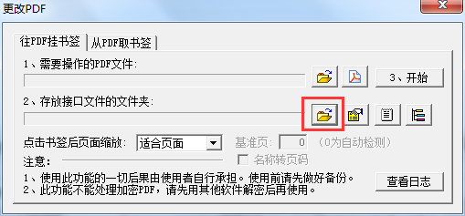
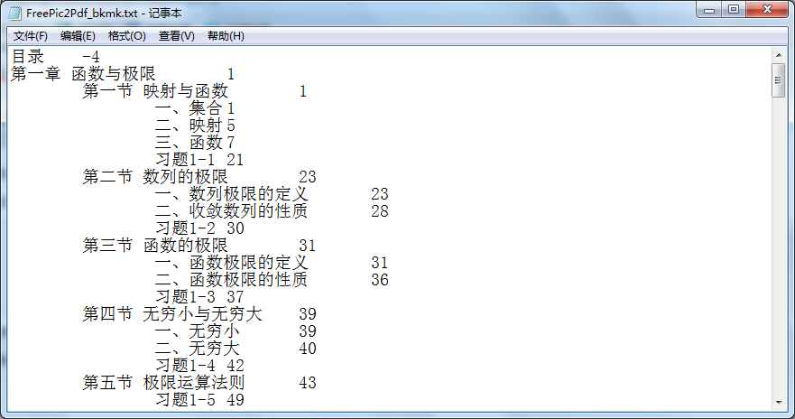
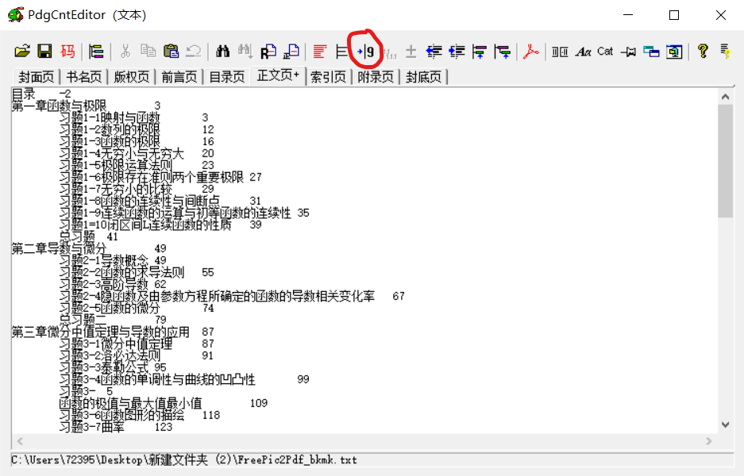
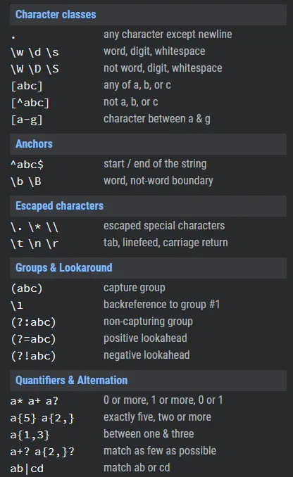

使用FreePic2Pdf给pdf书籍添加目录¶
工具Tool¶
- FreePic2Pdf免费软件
- 树洞OCR开源软件（使用了平台API，需要联网使用）
- PdgCntEditor(后加，比VScode编辑目录好用，直接去掉缩进)
步骤¶
先解释一下上述标签的意思：¶
- 往PDF挂书签：就是为pdf文件添加目录。不过需要目录文件，下面会有介绍制作的方式。
- 从PDF取书签：就是从有目录的pdf文件中提取出目录文件。
- 需要操作的目录文件：就是需要添加目录的PDF文件。
- 存放接口的文件夹：就是目录文件，需要制作。

1. 选择一个存放接口的文件夹¶
2. 创建配置文件¶
 * 在新建右方找到新建配置文件选项 * 复制如下代码到新建的配置文件中
1 2 3 4 5 6 7 8 9 10 11 12 13 14 15 16 17 | [Images] [Font] Language=GBK FontSize=7 Margin=0.5 [Bkmk] File=FreePic2Pdf_bkmk.txt AddAsText=0 ShowBkmk=1 ShowAll=1 BasePage=1 [Main] ContentsPage= TextPage= |
3. 创建目录文件¶
在这个文件夹下新建一个 FreePic2Pdf_bkmk.txt 文件。 * 注意：文件名必须为这个
这个文件就是目录文件，这里的目录需要自定义，它需要按照一定的格式:
1 2 3 4 | 一级目录\t页码 \t二级目录\t页码 \t\t三级目录\t页码 。。。(以此类推) |

Note
目录的页码是pdf文件的真实页码，而不是书上标志的那些页码，为了方便，可以将接口文件中 BasePage 字段修改为书中第一页对应的pdf页数。如：BasePage=12
Note
注意在开始前要对pdf备份，可能因为操作不当而损坏重要文件
后记：
- 这种方法对OCR识别的目录来说并不友好，需要手动操作过多
- pic2pdf软件的目录文件，对缩进的要求极高必须是制表符而非四个空格
- 可以在Vscode右下角选择空格，改变缩进方式为“使用Tab缩进”
- 并且只能有一个制表符，多了不能识别
-
PdgCntEditor软件来编辑目录是最为合适的，图中红圈即为“自动切分页码”，这将把多余缩进删去 
-
对编码要求，选择是GBK就必须将目录文件保存为GBK，而不是UTF-8，这在VScode右下角可以更改
- 如果是乱码，千万不要选择通过编码重新保存，而是选择通过编码打开，他们是不同的。
Note
VScode中通过编码打开与通过编码保存的区别：通过编码保存是默认当前编码正确而转换代码的。通过编码重新打开则是改变一种读取方式。为了避免操作错误而导致文件损坏，保险的做法是：无论如何先选择通过编码打开，再选择通过编码保存（如果需要的话）
- 先选择
通过编码打开，再选择通过编码保存（如果需要的话） - 先选择
通过编码打开，再选择通过编码保存（如果需要的话） - 先选择
通过编码打开，再选择通过编码保存（如果需要的话）
正则表达式小手册 